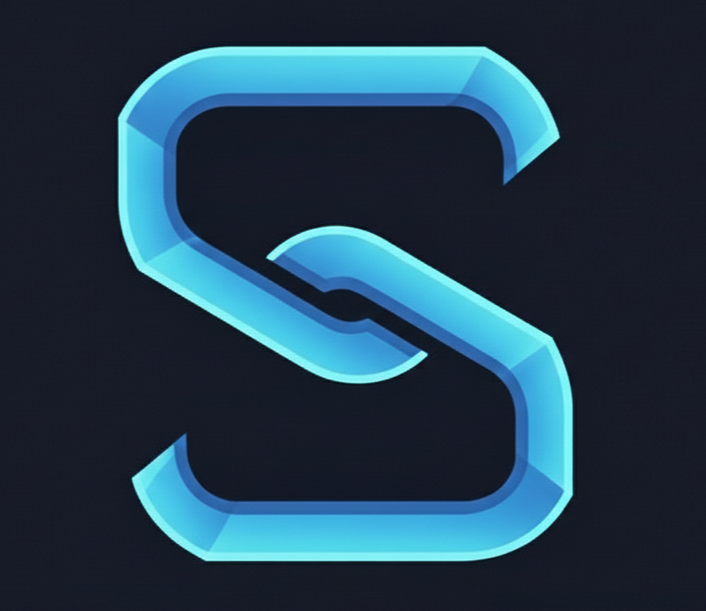

SmariXSmariX connects people, knowledge, and context — ensuring continuity from day one to the last day.
New hires get access, documents, and a welcome call. But they rarely get real clarity.
Onboarding takes months.
When people leave, knowledge leaves quietly with them.
Offboarding today is an exit form —
not a knowledge transfer.
SmariX treats onboarding and offboarding as one connected flow.
From the first task you learn from to the last insight you leave behind — everything stays connected.
AI captures context automatically, without adding work for your team.
SmariX adapts to your workflow, capturing knowledge where it happens — not where documentation says it should.
Not templates or forced processes. Captures knowledge as it naturally occurs in your team's workflow.
Goes beyond documents to capture the why behind decisions, maintaining context for future teams.
New team members get up to speed faster with contextual knowledge, not just access and documents.
Automatically captures context without interrupting your team's natural workflow or adding overhead.
Lightweight integration that enhances your existing tools without requiring major workflow changes.
Knowledge flows naturally. No mandatory forms or documentation requirements that slow teams down.
Turn onboarding and offboarding into a continuous intelligence loop.